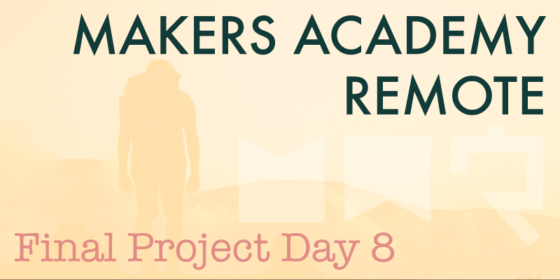

Solo
Today was unusual, because we began by each working alone rather than pairing. As a group of three our progress is somewhat limited compared to larger groups, so today we opted to start by each selecting a small issue to work on alone. We were keen to avoid anybody spending too much time alone however, in order to retain the benefits of working as a group, so we decided to work alone on our issues, but to remain in a group video chat the entire time for company. We each kept our microphones muted, but it was just nice to know that the others were at hand to assist if required. A few times we did all come together briefly to help out on an issue, but largely we all managed to solve our individual issues within a couple of hours, making for a very productive morning. The issues which we completed were to finalise photo uploading to Amazon Web Services to providing user avatars, to display each stop on the itinerary, sorted by the date on which the stop will occur, and to tidy up the site's navigation.
Google Maps
In the afternoon we moved away from the Rails side of the app to begin working with the Google Maps API, which will provide our site's mapping capabilities. We began by implementing Geocoder, a Ruby gem that allows for addresses to be input as text translating those addresses into standard latitude and longitude coordinates. We then used the Google Maps API to plot those coordinates and display them on a map of the road trip.
As additional stops are added to the road trip the map adjusts accordingly to keep each stop within view. However when no stops have been added Google defaults unhelpfully to displaying the very centre of the world map. To rectify this we decided to implement geolocation using the user's web browser, to turn their current location into coordinates that could be plotted on to the map as a default position, so that when no stops have been added to a road trip, the map for that road trip defaults to showing the user's current location, rather than the centre of the world map.
Learning to work with Google Maps and Geocoder at this level has been difficult but very rewarding, and has made a nice change from working with Rails.